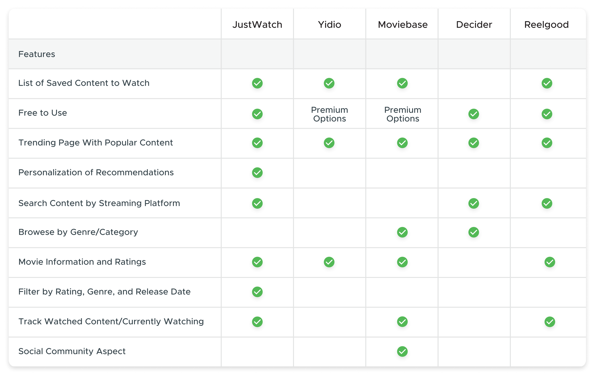
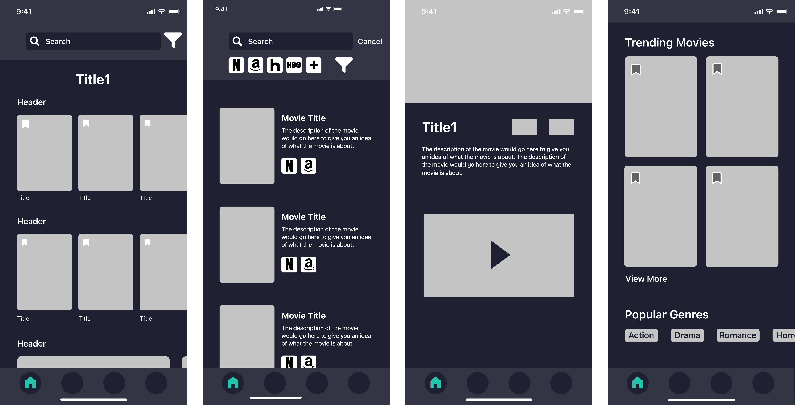
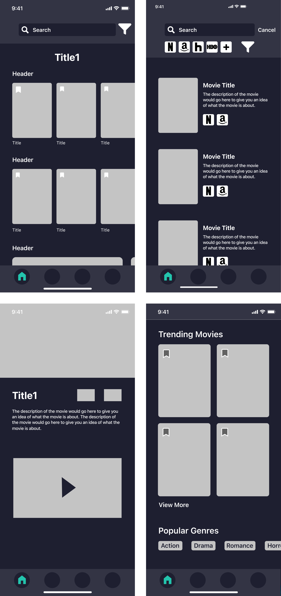
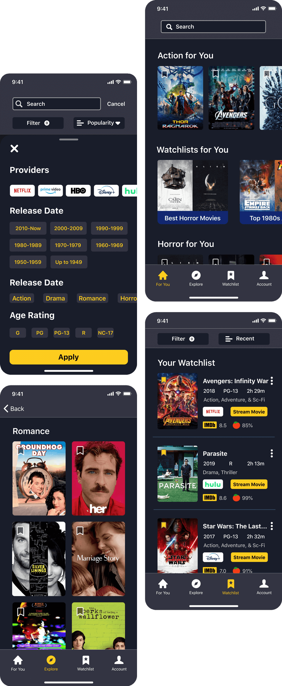

A streaming assistant to help search and discover content across platforms.
Spotter is an iOS mobile prototype aimed at assisting users to search for, discover, and track digital content to watch across various streaming services. Spotter was created alongside two other team members as a class project utilizing Goal-Directed Design. Spotter focuses on three main challenges derived from user interviews and research to keep the focus on user goals while addressing business needs.
Challenges
- Help users discover content to watch
- Simplify cross-platform content browsing
- Improve clarity of content entering and leaving platforms

Transforming the way users access multiple streaming platforms.
For my Interaction Design class I led a team of three to create the Spotter digital streaming assistant app. The team consisted of Cole Christiansen, Anthony Jones, and me. I was tasked with directing our team as we utilized the Goal-Directed Design process to design our app.
Having grown up in the information age, our team is familiar with the variety of streaming services offered and their shortcomings. I hypothesized that with the growing number of digital streaming platforms, users might have trouble finding content across various platforms. We aim to simplify and transform the way users interact with their preferred content platforms and minimize the frustrations of currently available solutions.
My Role
Team Lead
Led and finalized all decisions while ensuring that our decisions met business and user goals. Presented our final results and process.
Research
Oversaw the research phase, conducted competitive analysis, facilitated five user interviews, and conducted three usability test sessions to verify designs.
Interaction
Created the information architecture, layout design, and user flows for the screens. Translated designs into a high-fidelity interactive prototype.
UI Design
Assisted with creating the asset and branding design. Finalized decisions to ensure the product properly targets our primary users in an accessible way.
We utilized the Goal-Directed Design method to focus on user goals.
Goal-Directed Design is a multi-stage user-centered methodology created by Alan Cooper. This multi-stage process begins with research to get a better understanding of user goals and expectations before developing a solution to design and test.
The first half of the process focuses on research to discover information about the user including their goals and behaviors. There are three types of goals:
- Life Goals: Who the user wants to be
- End Goals: What the user wants to do
- Experience Goals: How the user wants to feel
The Goal-Directed Design Process Steps
Understanding the problem and user with research.
We conducted research to establish an understanding of the potential domain, competitive technologies, and user goals/behaviors. We wanted to establish research that would allow us to create a solution that matches our user expectations, behaviors, and goals while aligning with business goals and requirements of our concept. This meant researching the domain, current technologies, and ultimately our users’ goals.
Targeted Information
- Establish business needs and goals
- Become more informed on the domain
- Explore current technologies and views
- Understand our users’ behaviors and goals
Below is an overview of portions of the research stage, but for a more detailed look at our findings and process please view the research report.
Examining current market solutions and user reviews.
To gain a stronger understanding of competitor technology and user views on them, we completed a competitive audit. This step allowed us to get a better sense of what was currently being offered and how users felt about the solution. To achieve this we examined apps available on the Google Play Store, Apple App Store, and a web-only service.
After browsing four apps and one website, I noted features that were available within the app and what features were placed on the home screen. I also made note of which apps allowed customization based on the user's available platforms and preference in genres. Lastly, I used the search function to explore the ease of use and filtering options available.
Certain competitors stood out, but even they lacked key features.
We found that competing apps often offered standard features that would be expected, such as basic browsing and searching. However, many of these features were limited in their capabilities. The apps lack filtering in the search function and browsing. The search function only allows users to browse by titles. There was also a severe lack of personalization within the apps as the recommendations were generic to all users.
The Competitive Audit Feature Results
Gaining an understanding of our users.
To properly understand who our users are and what their goals are, we conducted five user interviews of students around the age of 20. There was a mix of students with three using multiple streaming services on a regular basis with the other two only streaming content occasionally. I chose to use this mix of users to get contrast in our insights with both our most likely targeted users, the more enthusiastic watchers but also those who occasionally watch content.
Using ethnographic interviews to discover user goals and behaviors.
We had one moderator leading the conversation while two facilitators made notes. We looked for information such as in what context the application fits into their lives, their goals, motivations, mental models, and problems or frustrations with streaming platforms.
It was my job to ensure that any important details mentioned by the participant were noted and explored. I would ask them to expand on or clarify any details they mentioned that might help us better understand who they are and what their goals are. The ultimate goal was to discover who they were as a person so that we could be informed in our decisions later in the design process.
The main pain points for our primary users revolved around browsing their various platforms to find new content to watch. When looking for something to watch they would scroll through one platform's catalog before the next, assuming they found nothing. This would often take a few minutes before either finding something new to watch or settling for their favorite TV show.
Sample questions from the interviews:
- What does your day look like after you finish school, work, or any responsibilities?
- What are some things that interest you?
- Describe how you find new forms of entertainment.
- Where do you normally watch or stream TV/Movies?
Discoveries from interviews:
- Most of those interviewed had access to multiple streaming platforms.
- Of those who regularly watched content, they would browse aimlessly before watching something.
- When they could not find something to watch most would settle and watch their favorite show or movie.
- The more avid watchers would browse between multiple platforms before deciding.

An interview Session
Modeling the interview data into personas.
As a means of easily digesting and discussing the information, personas are created to take the major components of the various participants and map the similarities to find patterns among the users and represent them as a grouped model. This model is displayed as a persona to help the designers, stakeholders, and others involved in the project understand the users while keeping a focus on their goals. We used this as a person to reference when making decisions to help keep focused on user goals.
We established two personas, with our primary user being someone who regularly watches a variety of content across various streaming platforms. They often browse through the catalogs in the hope of finding something new and exciting. However, they often look for content that matches their tastes and preferences. The secondary user is someone who only watches content occasionally and typically only watches their favorite show. They will occasionally watch new content recommended by friends.
Primary User Goals:
- Make the most of their limited free time.
- Discover new movies and shows across their various platforms.
- Feel accomplished that he made the most of their day.
- Be entertained during their free time.


Defining the app's requirements.
Once we understood what our users looked like and determined what their goals and behaviors were, we began to discuss the requirements of the app. We did this by constructing context scenarios in which our users would use our product including the environment, amount of time available, and potential distractions. This helped us put ourselves in the user's shoes for the day and consider all the various ways the app might be used. We discussed and came up with several requirements that the app should include based on the scenarios. These requirements are not specific features or layouts within the product but rather what the app will do at a higher level.
The main requirements revolve around allowing the primary user, Jake, to quickly discover new content to watch based on their preferences. This includes user-specific recommendations and quick access to searches across platform databases. The ultimate goal is to allow Jake to quickly browse content and watch a show or movie.
Primary Requirements
- Recommendation of content personalized to the user and their tastes.
- Easily sift through the large amount of content across platforms.
- Easily display cross-platform information in a digestible way.
- Keep track of content entering and leaving platforms.
Designing the framework and flow of the screens.
Once we established the research on the domain and technologies we were able to begin discussing the wireframe and design. This is a stage that benefits from meeting in person and creating designs quickly with many revisions. Unfortunately, due to the events of COVID-19, we had to reconsider how we would continue the project. I landed on InVision Freehand as it offers real-time collaboration and would allow us to quickly sketch wireframe designs.
I took the lead and discussed designs with my team as I drew up wireframe designs. The goal of this was to quickly explore a variety of layout options and flows. The main conversations revolved around home content versus the explore page content and the placement of the search bar on the home screen. We wanted to make sure that we were delivering both a unique experience and an expected one.
I took the initial sketches and further developed them on my iPad. Although we covered most details in the initial brainstorming session, some minor elements needed further thought. I wanted to create design solutions that prioritized customization and ease of use when discovering/searching for content while not overwhelming the user with unnecessary information. Our primary user, Jake, wants to make the most of his time and gets frustrated when he is stuck scrolling through his various platforms to find something to watch. The user already has access to a large amount of information, the goal is to make the sifting through that information easier.
We focused on three main concepts:
- Home screen: we wanted to present content custom-tailored to the user's tastes in movies and genres.
- Search function: we wanted a simple way of searching for a movie across all the user's streaming platforms.
- Tracking movies: we wanted to offer the user a way to save movies to a list so they could track the content they want to watch.

Refining and turning the design into a prototype.
I took the sketches and began converting them into the digital workspace. Being able to mirror the design onto a mobile phone allowed me to view the design in the context of how the user would see it. The overall focus was on balancing the content to keep it from overwhelming the user. Having a general layout allowed us to play with options such as button and icon design in addition to their placement.
Due to COVID-19 we were unable to conduct a low-fidelity paper prototype. However, we conducted a cognitive walkthrough to consider the intended flows, interactions, and overall layout of the screens. There were minor changes made here such as the content displayed on the home screen and icon placement on the movie information screens. We waited until we had a higher fidelity prototype to test the design with users.
 Low-fidelity digital screens
Creating the high-fidelity prototype.
We started by defining the visual language of the app to create a design system to work from. Overall we wanted a design that was casual and geared towards dark environments.
I had the other team members work on the visual elements while I worked on creating the high-fidelity prototype including the layout and interactions. It was during this stage that tweaks were made to the design to simplify elements and rearrange content to make it more easily digestible.
Usability Testing to refine the design.
Due to COVID-19, we were only able to conduct our testing in a virtual setting. In total, we conducted three rounds of usability testing with fellow students. Despite this, we still used these tests to better refine our design as they offered great insight. Various minor interactions were missing or did not work as expected, including filtering the search results. Additionally, the personalized homepage was not immediately clear to the user.
We refined the design by adding to the filtering system and fixing the minor interactions. We also reworked the onboarding and homepage name to make it more clear that the content is personalized to the user. Other technical and layout issues were also addressed.
Main areas of concern:
- The homepage content was not clear it was personalized in terms of the category headers.
- Some search filtering options were missing such as genre and selecting platforms was confusing to some users.
- The lack of ability to mark content as watched after placing a movie or show in the watchlist screen.
- The lack of a search bar on the explore page when users expected it to be there.

Addressing challenges and the final design.
Throughout the design process we focused on three main challenges. These challenges are based on discoveries from our user interviews. We established these to be the three primary pillars of both what users wanted as well as a means of pushing our product above the others. Focusing on these pillars allowed us to tackle the challenges in an order from large to small to ensure we met all the expectations and requirements. The three main challenges: helping users discover content to watch, simplifying cross-platform content browsing, and improving clarity of content entering and leaving platforms. Below is a breakdown of the three primary challenges.
Challenge 1:
Discover New Content
The For You page allows quick access to content tailored to the user. We wanted to provide quick bite-size content that the user can explore based on their preferences. These preferences are defined in the user settings in addition to pulling data from the content on the user's watchlist.
Limiting the content on the home screen allows for quick browsing of content that the user most likely will enjoy. If the user wishes to view content beyond their taste, the Explore page offers trending content and genres beyond their favorites. We wanted this information to be separate to simplify the process of finding something to watch by not overwhelming the user with choices.
Challenge 2:
Cross-Platform Browsing
To allow users to easily view content across their chosen platforms, we added filtering by streaming platform to the For You and Explore pages. We wanted to deliver content in a manner that maximizes the user's options by giving them the choice to remove streaming platforms that the user does not own.
Users can also search directly for a movie, show, or genre through the search function. The search function also offers filtering to allow users to narrow down the results by genre, release date, platform, and age rating. Additionally, they can then sort the results to further narrow down their decision. Overall, the primary focus was on quickly delivering content based on what the user wants to watch.
Challenge 3:
Clarity of Content
We wanted to ensure that there was clarity as to what content users have access to. Curated content is displayed based on the user's preferences and icons are displayed on the movie detail screens detailing what platform the movie or show is on.
For content saved to the watchlist there is an icon on the main screen alongside a stream movie button that links directly to the corresponding app. Additionally, the watchlist will send push notifications when a movie or show is leaving the platform to allow the user to be sure they make the most of their platforms.
My takeaways from this project.
Overall I felt confident throughout the process as I built on knowledge from previous projects. However, this being the first time having the proper title of leader was interesting. Thankfully my team was very supportive and rose to the challenge at every step. Being able to work efficiently in the first half of the process certainly proved beneficial when COVID-19 shook things up. Although it was not ideal moving to a fully digital environment, we were able to make the most of the situation and even explore new tools and techniques.
Although I am satisfied with our results, certain areas could be more polished and explored. There are areas of interaction that I would have liked to explore more thoroughly, but I am confident that the overall design matches our user goals. Additionally, certain challenges were addressed but could use stronger solutions. We explored tracking content entering and leaving the platform, but a more robust solution beyond notifications could be explored. In the future I will keep the focus of functions more reasonable to ensure enough time for each feature.